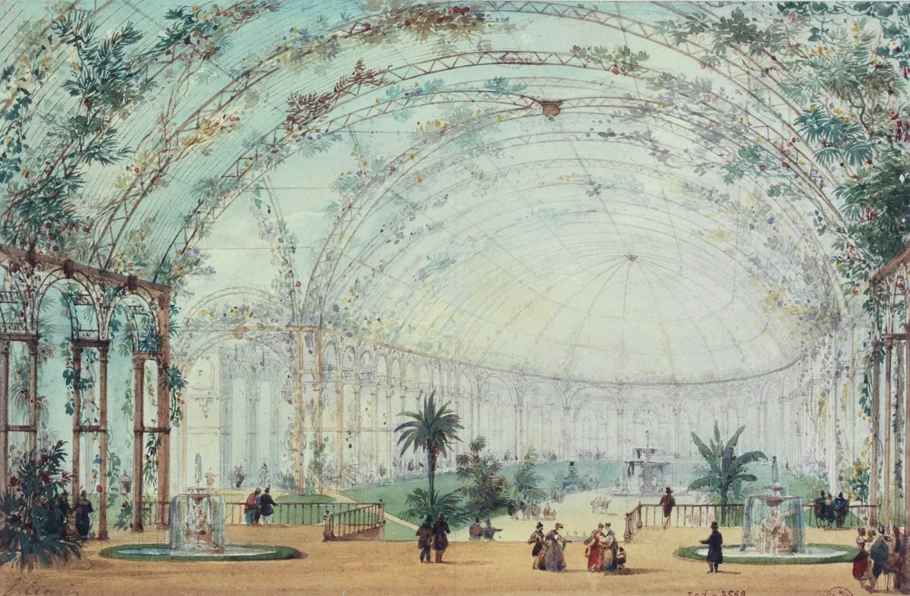

Across late 19th-century Paris, Brussels, and London, engineers of the Gustave Eiffel era elevated structural ironwork into a high art form. From grand hotel winter gardens to soaring exhibition pavilions, Belle Époque glass architecture proved that exposed riveted ribs, arched spandrels, and delicate iron latticework could transform public gathering spaces into unforgettable landmarks.
Today, London boutique hotels, private members' clubs, and destination restaurants draw directly on this monumental iron-and-glass tradition to convert open courtyards into year-round revenue-generating venues.

Architectural Signatures of Belle Époque Glass Pavilions
- Expressive Structural Ribs: Rather than hiding the frame, exposed steel columns, decorative spandrel brackets, and arched trusses create rhythmic visual grandeur.
- Lantern Clerestories & Cupolas: Raised central roof lanterns draw daylight deep into wide commercial floorplates while providing natural stack-effect ventilation.
- Grand Entrances & French Doors: Tall, multi-paned steel doors framed by ornate iron crestings establish an immediate sense of arrival.
Meeting Modern UK Hospitality Standards
Behind the 19th-century aesthetic lies contemporary commercial engineering—incorporating acoustic laminated glass roofs to contain evening dining noise, concealed HVAC and pendant lighting channels, and full compliance with UK Building Regulations for public occupancy and fire egress.
The age of the winter garden
In the second half of the nineteenth century, iron and glass moved from the botanical garden into public life. Exhibition halls, railway stations, covered markets, shopping arcades and hotel winter gardens across Europe used exposed ironwork and large areas of glass to create bright, impressive interiors. Paris led much of this work, and the engineering firm of Gustave Eiffel was among those building iron structures for railways, bridges and exhibitions. The tower he built for the 1889 Exposition Universelle was made from puddled wrought iron, not steel, and showed how far iron construction had come.
In Britain, winter gardens became features of seaside resorts and spa towns, offering concerts, tea rooms and promenades under glass whatever the weather. Many hotels added glazed courtyards and palm courts, which became settings for afternoon tea and dances.
What made the style distinctive
- Visible structure: columns, trusses and brackets were left exposed and decorated rather than hidden.
- Height: tall proportions, raised lanterns and domes gave a sense of occasion.
- Ornament at the joints: spandrels, brackets and capitals concentrated decoration where members meet.
- Light and plants: palms and flowering plants softened the iron and glass and made the room feel like a garden.
Reinterpreting the style for hospitality today
A modern winter garden for a restaurant or hotel can use the same vocabulary with contemporary performance. Our Black and Gold Garden Salon shows a glazed salon with a balustraded terrace, black framing and gold ornamental ribs on a curved interior ceiling. The Crest Garden Salon, with arched upper lights, an ornamental crest and lanterns, shows how a flat-roofed salon can still carry Belle Époque character. Both point to designs that can work as private dining rooms, bars or event spaces.
Practical considerations for a large glass room
Large hospitality glasshouses need careful thought on heat gain, acoustics and lighting. Solar-control glass, high-level vents and mechanical ventilation keep summer temperatures comfortable. Acoustic laminated glass and soft finishes reduce noise from rain and from guests. Chandeliers and pendants need structural fixing points designed into the steelwork. Our guide to glasshouses for hotels and restaurants covers regulations and operations in more detail.
Courtyards and rooftops
In London, the best opportunities often lie in enclosed courtyards, light wells and roof terraces. Prefabricated steel bays can be lifted in by crane and assembled quickly, which keeps disruption to the venue and neighbours to a minimum. A glazed roof over a courtyard can turn an unused space into the most memorable room in the building.
Continue reading
Explore the Victorian roots of the style in our article on the Crystal Palace, or see how a Gothic design served a restaurant in our Gothic Arch Conservatory.
Frequently asked questions
How does Belle Époque glass architecture differ from standard Victorian conservatories?
Belle Époque and Eiffel-inspired structures typically feature bolder structural iron ribs, taller vertical proportions, decorative lattice spandrels, and grand pavilion-scale spans suited to hospitality venues and large estates.
Can a large iron-and-glass winter garden be erected in an enclosed London courtyard?
Yes. Off-site modular workshop fabrication allows structural bays to be craned into tight urban courtyards and bolted together rapidly with minimal disruption to surrounding buildings.
How is acoustic comfort managed inside a large glass restaurant extension?
Specifying acoustic laminated double glazing dampens external city traffic and rain noise while preventing internal dining chatter from disturbing neighbouring residences.
Can the steelwork be customised with bespoke motifs or venue branding?
Yes. Custom laser-cut or hand-forged spandrel scrollwork, monograms, and architectural finials can be integrated directly into the ironwork design.